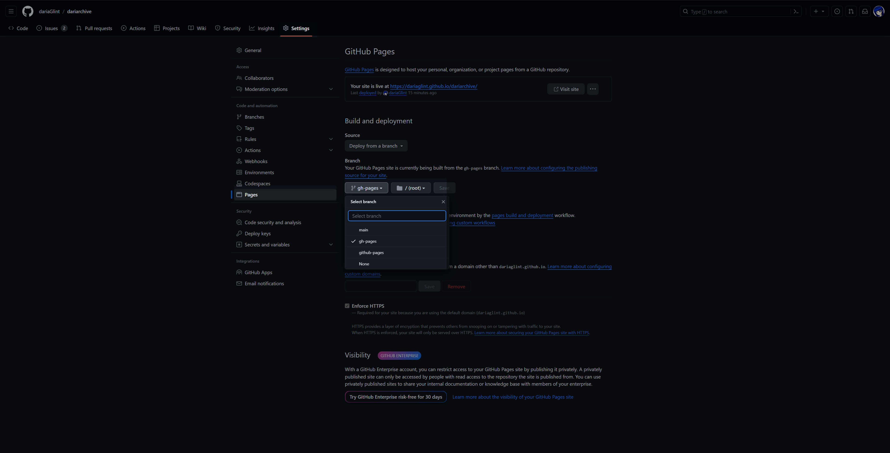

MkDocs 環境構築
環境構築
mkdocsをインストールするためにbashに下記を入力
1 2 | |
mkdocsをインストールしたら下記コマンドでプロジェクトを作成してそこにmarkdownファイルを追加していく
1 | |
既にGitリポジトリを作成してる方は上記コマンドで生成されたdocsディレクトリと中に入ってるindex.md,mkdocs.ymlファイルを 公開したいディレクトリに置く
1 2 3 4 5 | |
公開したWebサイトでPlantUMLなどを使う場合は使えるように下記をインストールしておくと良い
1 2 | |
サイト構築
準備が出来たら以下のコマンドを打つとsiteディレクトリができて、その中に生成されたhtmlファイルが格納される
1 | |
生成したサイトをローカル環境でプレビューしたい場合は以下のコマンドを打つと以下のURLをブラウザで開くとプレビューできるようになる。
1 | |
http://127.0.0.1:8000/
プレビューを終えたい場合はBashを開いた状態でCtrl+Cを押すとプレビューが解除される
Github Pagesに公開
リポジトリGithub Pagesに公開する場合は、以下のbashを打つ
1 | |
そうするとGithubのSetting→Pagesにブランチが追加されているのでgh-pagesブランチが作成されているので、それに切り替えると確認できるようになる

ハマったこと
mkdocs.ymlでエラーが出た時はインデントの設定が上手くできてないみたいなので、スペースとインデントはきちんと見た方がいい。
一応mkdocs buildでWARNINGが出るので出たときは見直した方がいい。
1 2 3 4 5 6 7 8 9 10 11 12 13 14 15 16 17 | |
configuration issue (idk wat title to put) #3222